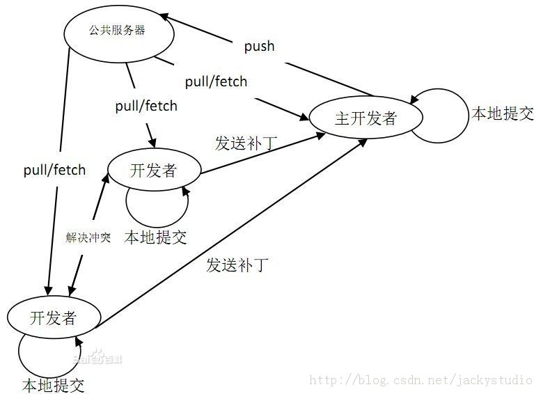
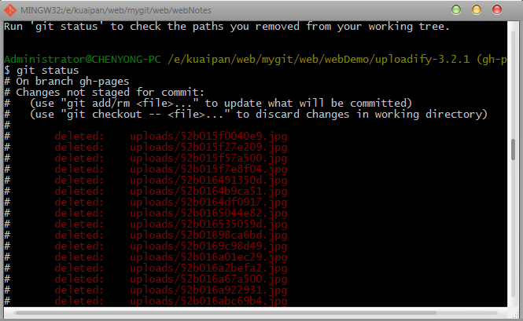
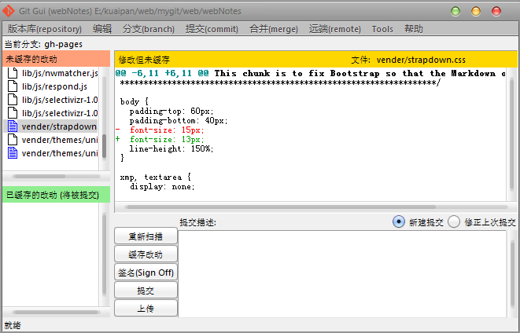

####Git 笔记-1
摘自:http://blog.csdn.net/jackystudio/article/details/12249451
1. [git简介](javascript:0) : <br />
一个开源的分布式版本控制系统，可以有效的高速的控制管理各种从小到大的项目版本。他的作者就是大名鼎鼎的Linux系统创始人Linus。
2. [分布式与集中式](javascript:0) : <br>
先看看集中式。简单说来，集中式就是把版本库集中放在某个中央服务器上（可以是局域网），然后每个人每次要使用时跟服务器进行通信，这样的缺点很明显，一旦服务器挂掉，就悲催了，不用干活了。
那分布式呢？分布式和集中式最大的区别就是它没有中央服务器这么一说，每台电脑都是一个服务器，每台电脑都拥有一个完整的版本库，谁修改了就把新的数据推送到其他电脑上，如果某台电脑挂掉了，没事，从别的电脑上拷贝一个出来就搞定。老板再也不用担心我的硬盘了！！！当然如果有一台中央服务器更好了，它将更方便修改的推送。
3. [Git经典的开发流程](javascript:0) :

4. [其它版本控制系统](javascript:0) : <br>
集中式：CVS，SVN，VSS... <br>
分布式：BitKeeper...
5. [Git安装](javascript:0) : <br>
这里只讨论Windows下的Git安装和使用。 <br>
msysgit是一个带有Unix环境的Git工具，下载地址：http://msysgit.github.io/，下载后一路默认next安装就可以了。
6. [Git的使用](javascript:0) : <br>
安装完成后，在开始菜单中可以看到Git目录下有两个程序Git Bash和Git GUI，前者是Unix Shell，后者是Windows GUI界面。<br>
Git bash <br>
 <br>
Git GUI <br>

7. [配置全局的用户名和Email](javascript:0): <br>
$ git config --global user.name "Your Name"
$ git config --global user.email "YourEmail@example.com"
如果希望对单个仓库使用不一样的配置，那么修改.git\config
[user]
name = YourName
emai= YourEmail@example.com